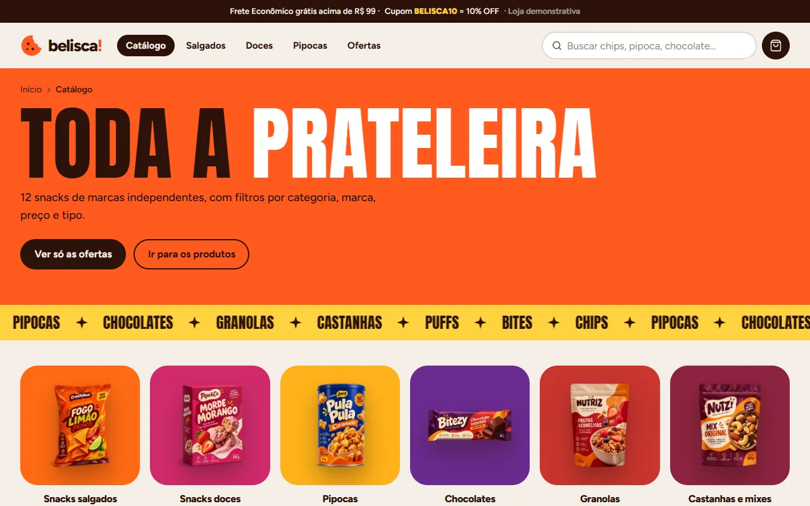
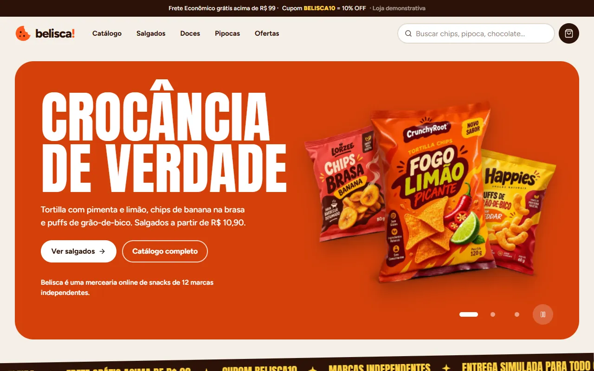
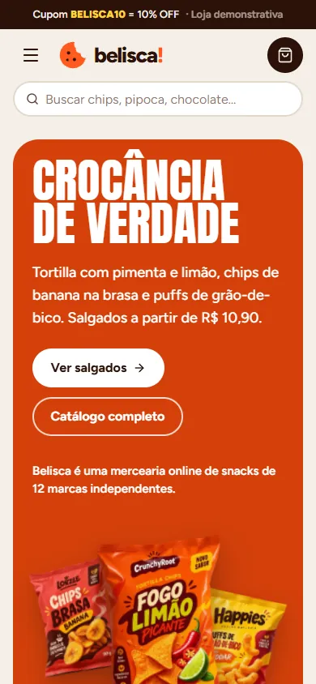
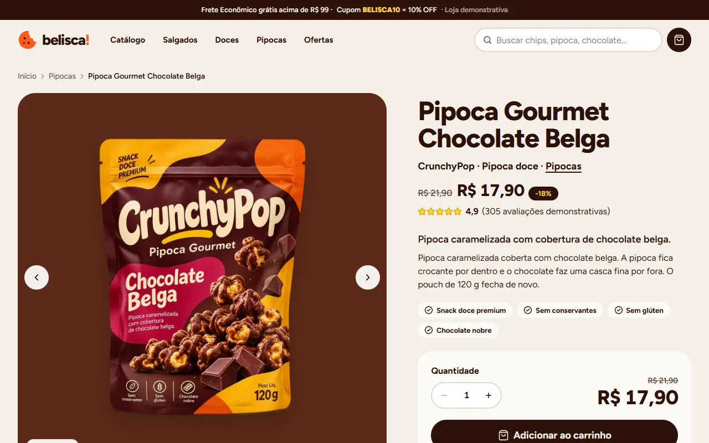
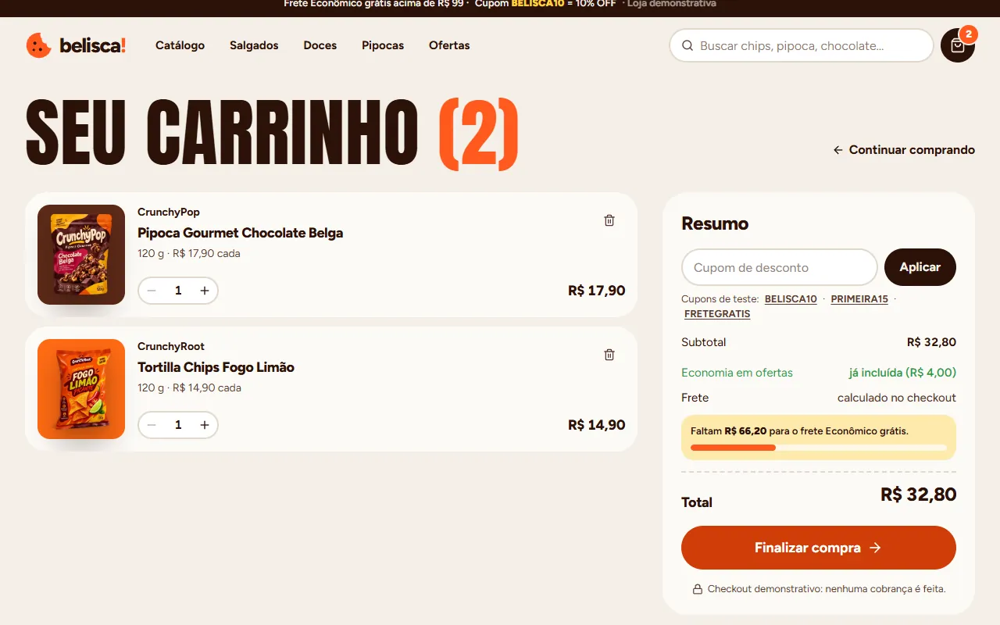
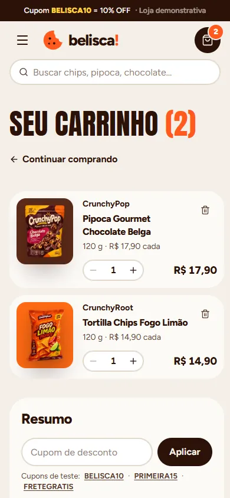
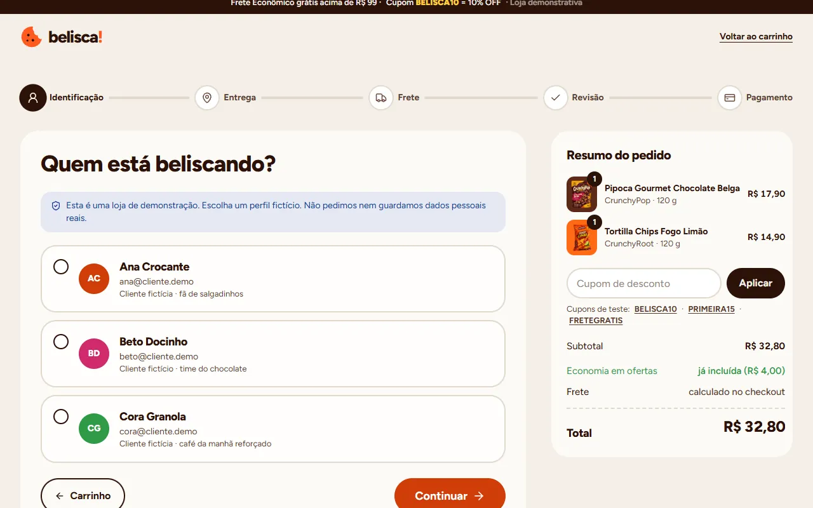

Prateleira organizada
O catálogo tem filtros por categoria, marca, preço e tipo, e a busca fica no topo de todas as páginas. Quem chega sabendo o que quer encontra em poucos toques.
Loja virtual de uma mercearia de snacks com doze produtos de marcas independentes. O cliente busca, filtra, monta o carrinho, aplica cupom e segue pelo checkout até a revisão do pedido.
Projeto conceitual: a Belisca e as marcas são fictícias. O checkout é demonstrativo e termina antes de qualquer pagamento ou coleta de dados.


Navegue pelo catálogo, abra um produto e monte um carrinho. Os cupons de teste aparecem no carrinho e no rodapé. Nada é cobrado nem enviado.
Um jeito rápido de saber se um projeto assim faz sentido para você.
As partes que mais ajudam o cliente a decidir, e o que cada uma resolve.

O catálogo tem filtros por categoria, marca, preço e tipo, e a busca fica no topo de todas as páginas. Quem chega sabendo o que quer encontra em poucos toques.

Cada produto tem galeria de fotos, preço com o desconto à vista, selos, ingredientes e tabela nutricional. O botão de compra fica junto da quantidade e do total.


O carrinho fica guardado se a pessoa sair e voltar. Ele aceita cupom, mostra a economia das ofertas e avisa quanto falta para o frete grátis.

Identificação, entrega, frete e revisão, uma etapa por vez, com o resumo do pedido sempre à vista. Na demonstração, perfis e endereços são fictícios e o fluxo para antes do pagamento.
Cuidados que não aparecem à primeira vista, mas fazem diferença no dia a dia.
Para receber pedidos reais, falta ligar o checkout ao meio de pagamento e ao cálculo de frete da loja.
Menu, busca, carrinho e checkout foram pensados primeiro para a tela pequena.
Produtos, preços, categorias e destaques ficam separados do visual. Entrar um produto novo não mexe no resto da loja.
As animações dão ritmo à vitrine e se desligam para quem prefere menos movimento.
Você conta o contexto e recebe por escrito o escopo, as entregas e o investimento antes de qualquer execução.